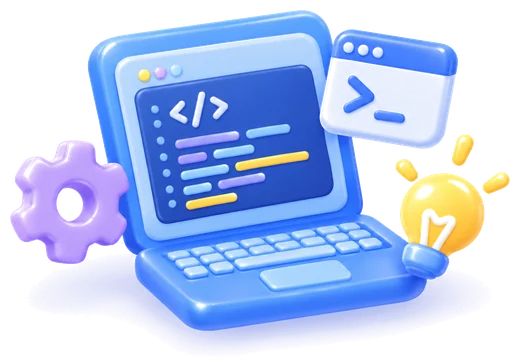

STEP 01
서류 전형
지원자님의 지원 자격, 지원 동기 등을 확인하는 과정이에요.
지원할까 말까 고민 중이죠?
일단 여기부터 같이 봐요!
키워드 체크와 셀프 점검을 통해 내가 지원 가능할지 미리 확인해요.
궁금했던 전형과 수업, 준비 과정까지 한눈에 정리했어요.
모집 대상
나이
만 18~39세 이하
전국 청년 미취업자
학력
학력 무관
학력과 상관없이 지원할 수 있어요
전공
전공 무관
비전공자도 지원할 수 있어요
세부 기준(미취업의 범위, 졸업 유예 확인 서류 등)은 공식 모집 공고를 따라요.
0 / 5 확인했어요
모집 프로세스 보러 가기모집 프로세스
STEP 01
지원자님의 지원 자격, 지원 동기 등을 확인하는 과정이에요.

STEP 02
서류 지원이 확인되면 기본적인 AI 지식과 역량을 검증하기 위한 코딩 테스트를 진행해요.
코딩 테스트 면제지원 시 AI 관련 역량을 검증할 수 있는 포트폴리오를 제출하면 코딩 테스트가 면제돼요.

STEP 03
STEP 04
각 전형별 결과를 종합해 최종 합격자를 선발하고, 문자나 유선으로 개별 안내해요.
지원 혜택
BENEFIT 01
교육지원금 최대 50만원 지원
광주 시외 거주자가 광주 시내로 거주지를 이동한 경우 주거지원비 최대 35만원 추가 지원
BENEFIT 02
프로젝트 기간 동안 쾌적하게 진행할 수 있도록 지원금을 제공해요.
BENEFIT 03
교육 기간 동안 사용할 수 있는
개별 노트북과 모니터를 대여해요.
BENEFIT 04
수업을 위한 교재와 실습 자료를
무료로 제공해요.
BENEFIT 05
완성도 높은 결과물을 낼 수 있도록
현직 멘토를 매칭해요.
BENEFIT 06
우수 교육생으로 수료하면
이스트소프트 인턴십 기회를 제공해요.
BENEFIT 07
교육생의 취업과 창업을 전문가와 함께 지원해요.
BENEFIT 08
AI·IT·SW 자격증을 취득할 수 있도록 지원해요.
지원 금액과 조건은 모집 회차에 따라 달라질 수 있어요. 최신 기준은 공식 모집 공고를 확인해 주세요.
지원 혜택, 선배들은 어떻게 느꼈을까요?자주 묻는 질문